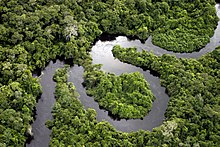

Bosques Humedos
La selva tropical o bosque lluvioso tropical es la selva o bosque denso de clima tropical húmedo que se caracteriza por unas elevadas precipitaciones (2000 a 5000 mm anuales) y una elevada temperatura media. Son pluvisilvas que se sitúan en las proximidades del ecuador terrestre, en América, África, Asia y Oceanía. (para la Selva tropical seca, ver Bosque seco)
De todos los tipos de bosque tropical, la selva tropical es el ecosistema de mayor extensión y de mayor importancia. Su vegetación está formada por especies de hoja perenne y ancha.
Los bosques húmedos tropicales de Honduras se encuentran en Islas de la Bahia, Gracias a Dios, Colon, el norte de Atlántida y Cortés.
